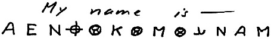
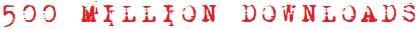
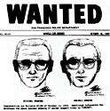
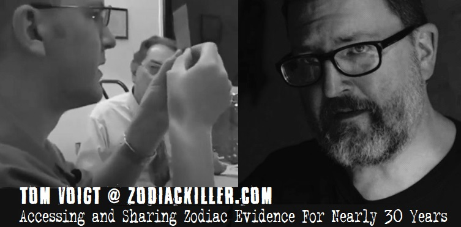

On the trail of California's notorious,
still-at-large serial killer — the Zodiac.
still-at-large serial killer — the Zodiac.
Zodiackiller.com — Online since 1998 · The only Zodiac Killer website recognized by law enforcement



The only Zodiac Killer website recognized by law enforcement
Owned and operated by Tom Voigt
Owned and operated by Tom Voigt
Previously classified Zodiackiller.com e-mail
"I was a psychiatric nurse in the Bay Area during the time of the Zodiac murders. A patient was admitted to our hospital who many of us came to believe was the Zodiac killer. There were no murders during the time he was hospitalized. There was a murder one night when he was out on an unescorted pass. He later committed suicide by throwing himself in front of a train. There were no more Zodiac killings reported after his death. At the time, confidentiality laws prevented us from reporting our suspicions to the police or FBI. He was a very ordinary appearing man who wore black rimmed glasses and looked like an accountant if you will. Please keep my e-mail address confidential."
Special thanks to these invaluable contributors:
Mark Sowers · Brendon Sibley · Keven McQueen
Mark Sowers · Brendon Sibley · Keven McQueen